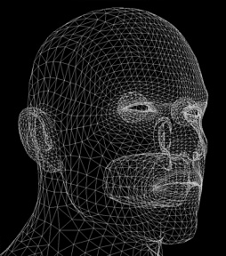
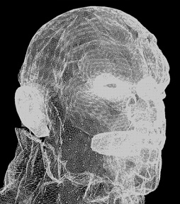
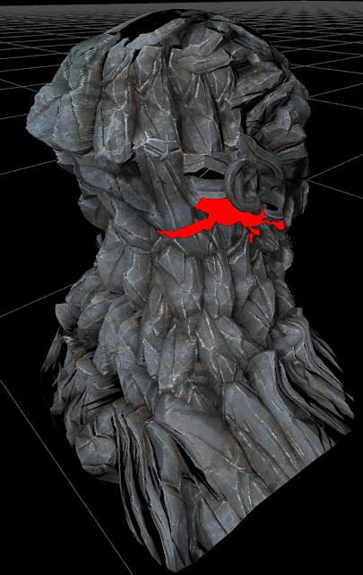
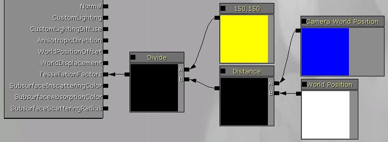
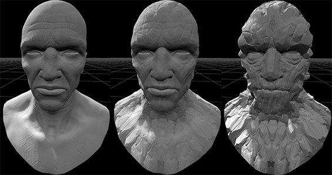

UDN
Search public documentation:
TessellationDX11KR
English Translation
日本語訳
中国翻译
Interested in the Unreal Engine?
Visit the Unreal Technology site.
Looking for jobs and company info?
Check out the Epic games site.
Questions about support via UDN?
Contact the UDN Staff
日本語訳
中国翻译
Interested in the Unreal Engine?
Visit the Unreal Technology site.
Looking for jobs and company info?
Check out the Epic games site.
Questions about support via UDN?
Contact the UDN Staff
DirectX 11 테셀레이션
개요
고전 게임의 콘텐츠 파이프라인 지오메트리는 트라이앵글 메시에서 생성됩니다. 그래픽 카드는 트라이앵글 메시를 매우 효율적으로 렌더할 수 있으니 아티스트가 만든 메시를 직접 렌더하는 것이 자연스럽습니다. 불행히 사용된 트라이앵글 수가 너무 적으면 품질이 나쁘거나, 너무 많으면 렌더링 속도가 느리거나 할 수 있습니다. 요즘의 그래픽 카드는 일부 입력 메시를 고도로 테셀레이트된 렌더 메시로 분할하여 트라이앵글 수를 증폭시키는 하드웨어 테셀레이션 기능을 지원합니다. 즉 메시의 트라이앵글 밀도를 조금 낮춰 만들고서 거리나 (지오메트리 디테일 등) 다른 속성에 따라 재정의할 수 있는 것입니다. 이 프로세스는 디스플레이스먼트(displacement, 변위, 노멀방향으로 튀어나오게 하는) 매핑을 가능하게 하기 위해 프로그래밍 가능합니다.|   |
| 좌: 테셀레이션이 없음 우: 테셀레이션과 디스플레이스먼트 있음 |
활성화 방법
 테셀레이션 팩터는 가장자리에 6, 트라이앵글 내부에 5 로 설정되었습니다.
또한 머티리얼의 WorldDisplacement 입력으로 디스플레이스먼트(displacement) 매핑도 사용합니다. 이 머티리얼은 텍스처의 Blue 채널을 사용하여 노멀 방향으로 튀어나오게 만듭니다. 이는 두 (min displacement, max displacement) 벡터를 블렌딩(혼합)하는 선형 보간에 의해 이루어 집니다. 두 벡터 다 Z 컴포넌트만 사용하기에, (0,0,x) 형태의 벡터가 나올 것입니다. 그리고서 VectorTransform 노드를 사용하여 이 벡터를 탄젠트에서 월드 공간으로 변형합니다. WorldDisplacement 가 월드 공간이 입력값을 기대하기 때문입니다. Transform 노드 없이는 디스플레이스먼트가 메시 표면에 정렬되지 않을 것이며, 버텍스는 월드 Z 축을 따라 이동할 것입니다.
테셀레이션 팩터는 가장자리에 6, 트라이앵글 내부에 5 로 설정되었습니다.
또한 머티리얼의 WorldDisplacement 입력으로 디스플레이스먼트(displacement) 매핑도 사용합니다. 이 머티리얼은 텍스처의 Blue 채널을 사용하여 노멀 방향으로 튀어나오게 만듭니다. 이는 두 (min displacement, max displacement) 벡터를 블렌딩(혼합)하는 선형 보간에 의해 이루어 집니다. 두 벡터 다 Z 컴포넌트만 사용하기에, (0,0,x) 형태의 벡터가 나올 것입니다. 그리고서 VectorTransform 노드를 사용하여 이 벡터를 탄젠트에서 월드 공간으로 변형합니다. WorldDisplacement 가 월드 공간이 입력값을 기대하기 때문입니다. Transform 노드 없이는 디스플레이스먼트가 메시 표면에 정렬되지 않을 것이며, 버텍스는 월드 Z 축을 따라 이동할 것입니다.
테셀레이션 모드
   |
| 좌: 테셀레이션 없음 중: 플랫 테셀레이션 (버텍스가 더 많아, 대부분 디스플레이스먼트와 함께할 때 유용) 우: 지오메트리를 연하게 하는 PN 트라이앵글 테셀레이션 (실루엣이 더욱 원에 가까움) |
테셀레이션 팩터
스무딩 그룹
UV 이음새 (UV Seams)

다이내믹 테셀레이션 팩터

여기에 사용된 메시에 대해 조정된 값은 150 이었습니다.다이내믹 디스플레이스먼트

디스플레이스먼트 데이터는 다른 머티리얼 속성처럼 시간에 따라 변할 수 있습니다.